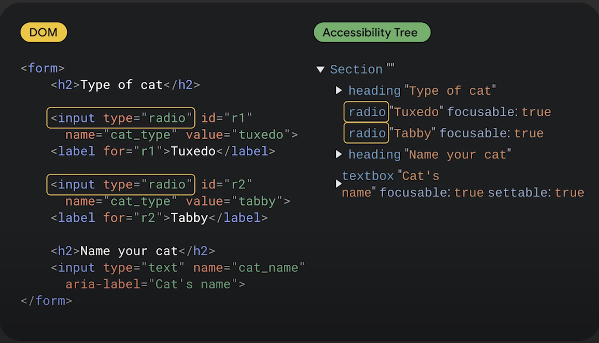
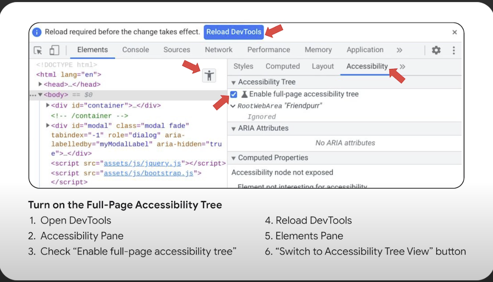

Disciplinas
INTERFACE HUMANO-COMPUTADOR-T01-2024-2 Concluído
Materiais
Vídeo 2 - Depurando acessibilidade com o Chrome DevTools sendProf.ª ministrante: Cynthia Shelly (GoogleIO)
Conteúdo
Chrome DevTools
Faça duas coisas.
1. Encontre bugs
2. Corrija-os
Verifique manualmente.
As ferramentas não encontrarão tudo
- Interação
- Isso faz sentido?
https://googlechromelabs.github.io/friendpurr/friendpurr.html
O ChromeVox:
- É um leitor de tela integrado nos Chromebooks, projetado para ajudar pessoas com deficiência visual a utilizar o sistema operacional Chrome. Ele permite a navegação e interação com a interface através de feedback auditivo.
Depois de encontrar um bug, como corrigi-lo?
 Ative a árvore de acessibilidade de página inteira:
- Abra o DevTools
- Painel de Acessibilidade
- Marque "Ativar árvore de acessibilidade de página inteira"
- Recarregue DevTools
- Painel de Elementos
- Botão "Mudar para visualização em árvore de acessibilidade"
Demonstração:
- Árvore de acessibilidade de página inteira no Chrome DevTools